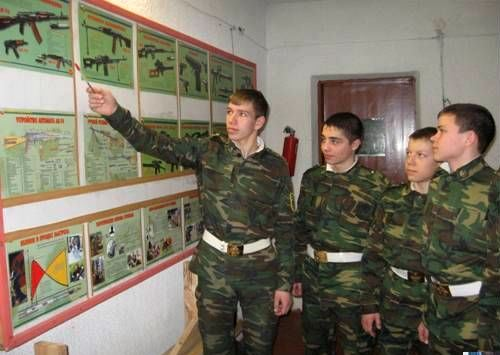
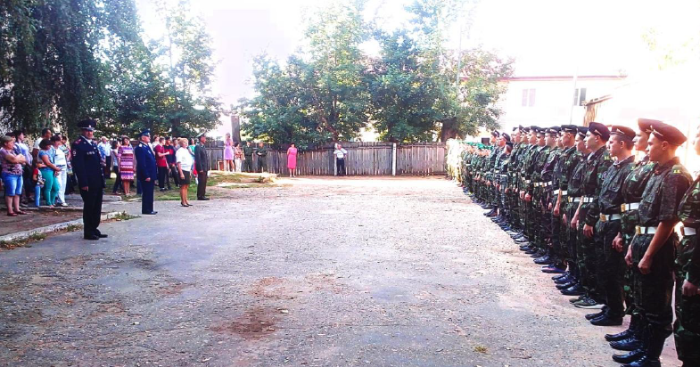
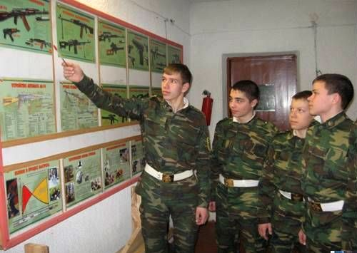
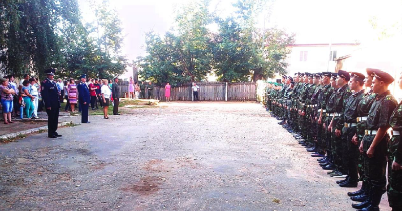

В то время, когда лицеисты догуливают последние дни летних каникул, двор Михайловского лицея наполняется шумом. Это занимаются ребята, которые только пришли учиться в кадетские классы. Для них учебный год начинается за десять дней до конца лета. Отовсюду раздается громкое: «Шагом марш!», «Напра-во!», «Нале-во!». И строй ребят в камуфляжной форме еще не совсем ровно и смело движется по площади. Командуют будущими защитниками Отечества старшие, уже опытные в деле строевой подготовки кадеты – одиннадцатиклассники. За всей процедурой подготовки четко следят офицеры – воспитатели лицея и вовремя исправляют допускаемые ошибки.
Кроме строевой подготовки новоиспеченных кадет ожидают теоретические занятия, где они знакомятся с уставом лицея и распорядком дня кадета.
 


